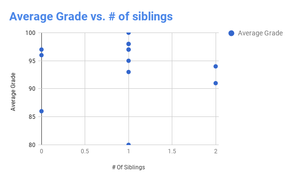

For our data project, my friend and I decided to research how your siblings, or how may siblings you have, affect your performance in school. My friend and I wanted to know this so we could give parents and siblings knowledge on whether siblings improve, lower, or have no visible impact on school grades. To get some information from students, we sent out a survey, and made a chart:
Our conclusion is that how many siblings you have has no direct effect on your performance in school. It varies from person to person, depending on many factors such as how old your siblings are and, for lack of better words, how annoying they are (it really depends)